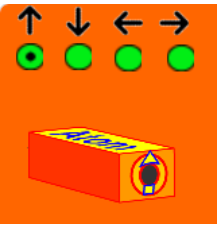
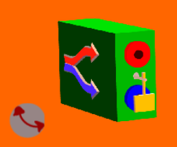
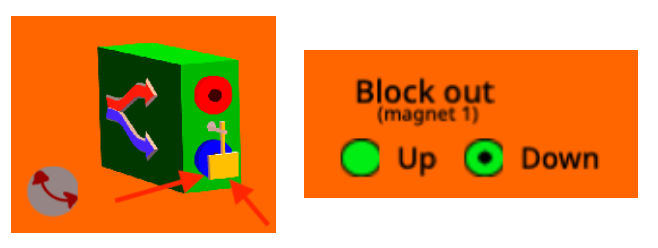
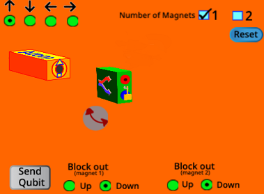
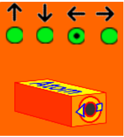
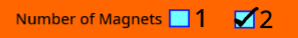
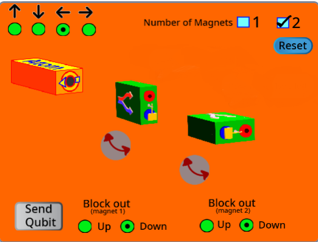
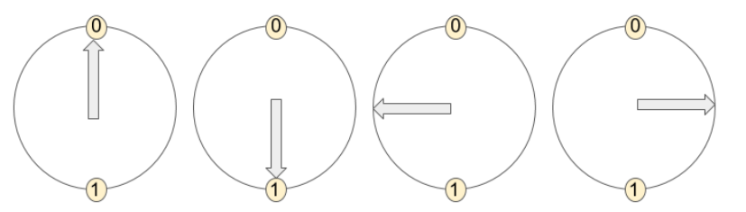

Stern-Gerlach Simulator¶
For this activity, we’re going to make use of a simulator. You can see the simulator by clicking the link here.
Let’s start out by getting to know the components of the simulator.
The source. This is a box which will shoot particles with certain spins out. The spin state of a single particle can be used to create a qubit, like we discussed in the last section. The qubits can have a state that is \(\rightarrow\;\) , \(\leftarrow\;\), \(|0\rangle\) or \(|1\rangle\).

A magnet. Particles will go in one end and come out one of two ends, corresponding to ‘spin up’ (red) or ‘spin down’ (blue). You can turn the magnet using the button to its left. Start out with the magnet set straight up and down. Clicking on the magnets will show or hide the percent of qubits that went each direction through the magnet.

A yellow blocker is placed at the exit point so that you can control which set of spins you want to keep. You can switch the blocker position by selecting “up” or “down” in the top menu.

Try and address the questions in the next parts together as a group. However, each group member can submit their responses separately.
Stern Gerlach Simulator Questions #1¶
Set the simulator so that the source creates up qubits, and the magnet is in the vertical position like the picture below. Then, use the “Send qubit” button to send in some qubits.

What percentage of the time does the qubit come out the “up” exit of the magnet?
100%
Now set the source to produce down qubits, leaving everything else unchanged.
Now which percentage of spins come out of the up exit on the magnet?
0%.
You might notice the statistics being displayed at the output of the magnet. This is because we are making a measurement on the particles that come out of the magnet.
We noticed that:
An up spin, when you check if it’s up or down, will turn out to be up 100% of the time.
A down spin, when you check if it’s up or down, will turn out to be down 100% of the time.
So far so good? Prepare for things to get a bit stranger in the next section!
Stern Gerlach Simulator Questions #2¶
We’re now ready to add a few more ingredients to our understanding of Stern-Gerlach. We’ll begin to explore one of the big concepts in the quantum world - randomness.
Begin by setting your source to create left pointing spins.

Leave your magnet in the up-down position, so that the spins coming out have the option of passing either up or down.
With what probability does the left spin pass through the up exit of the up-down magnet?
50% … A left electron goes up or down when passing through an up-down magnet randomly!
We’ve just seen the effects of measuring a superposition! Remember that a \(\leftarrow\) state is composed of an equal amount of and \(|0\rangle\) and \(|1\rangle\) states. So it makes sense that after repeated measurements, we will see that a measurement of with respect to the \(|0\rangle\) and \(|1\rangle\) (the up and down states) states should come up as one or the other 50% of the time. This exactly like the spinning coin at the bottom of an ocean trench that we used to visualize superposition a few days back.

When the coin stops spinning, it can land either face up or face down. If you spin enough coins and tally up the results, you’ll find that the outcome for heads or tails is roughly 50-50. This is what you’re seeing in the simulation.
Next, turn your magnet so it is in the 90 position, so spins coming out have the option of either going left or right. Keep your source producing left spins.
With what probability does a left spin go left when if passes through a left-right magnet?
100% … Just like an up qubit always goes up when it passes through an up-down magnet, a left qubit always goes left when it passes through a left-right magnet!
Now we’re going to up the challenge level, and put in two magnets! Click on the top menu to adjust the number of magnets.

Start with a source that is creating a left spin. Set the first magnet to make an up-down measurement, and the second magnet to make a left-right measurement. Now, shoot some spins through. Set both blockers ‘down’.

What percentage of spins will come out the final end of the second magnet? Note: Use both of the statistics from BOTH magnets to figure out the answers.
25% … A left spin passing through an up-down measurment will have a 50-50 change of being measured either as up or as down. Since the blockers remove all ‘down’ spins, we only have ‘up’ spins going into the second magnet. Since an up spin measured in the left-right basis will be have a 50% chance of being measured ‘left’, in total there is a 25% chance (1/2 * 1/2 = 1/4) of measuring a spin after the two blockers.
This is a challenge question! Start with a source that is creating a left spin. Then, try to have some of the spins coming out go right when they pass through the second magnet. How can you do this? Why do you think it works?
Once you’ve done this, explore the simulator by trying out different arrangements of magnets and sending in different kinds of spins.
Some hints and additional information¶
A video tutorial is here. Remember that we are thinking about four states a qubit can be in: up, down, left, right, represented as \(|0\rangle\) , \(|1\rangle\), \(\leftarrow\;\), \(\rightarrow\;\).

When we pass a spin through a magnet with a blocker, the spin can go in only one of two directions. The directions it goes in (or tries to go in, but is stopped by the blocker) depends on the result of the quantum measurement. We know that quantum measurement is weird, and that the outcome of a measurement is probabilistic.
In the simulation there are two different ways of measuring the qubit. Putting the magnet in the vertical position lets you measure if the spin would go up or down (a measurement in the \(|0\rangle\) , \(|1\rangle\), frame of reference or basis). Putting the magnet in the horizontal position lets you check if the spin would go left or right (a measurement in the \(\leftarrow\;\), \(\rightarrow\;\) frame of reference or basis).
We found that an up qubit going through an up-down magnet always is measured up, and similarly a left qubit going through a left-right magnet is measured as left. However, a left qubit going through an up-down magnet behaves randomly - it has a 50-50 chance of going up or down.
In the simulation with two magnets, you might have learned that if you send a left qubit into an up-down magnet and it goes up, it will then be an up qubit afterwards. The quantum measurement actually pushes the qubit to be either an up or a down qubit, even though it goes in as a left qubit. This is again something unique to quantum : meaurement changes the state of a quantum object.
What do you think would happen if a third magnet, in the same orientation as the first one, was added?